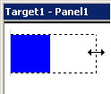
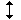
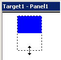
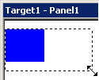
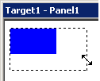
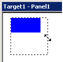

|
|
|
|
|
|
|
|
Click an object to display its selection box and eight handles—one handle at the top, bottom, both sides, and at each corner. The actual size of the object is the same as that of its selection box. For details, see Section 7.4.10, Actual Size of Graphical Objects.
Hover the Select tool over the left or right side handle of the selection box until the arrow becomes a horizontal double-headed arrow.
Click to select the handle, and drag the left or right side of the selection box to resize the object horizontally.

Hover the Select tool over the top or bottom handle of the selection box until the arrow becomes a vertical double-headed arrow.

Click to select the handle, and drag the top or bottom of the selection box to resize the object vertically.

Hover the Select tool over one of the four corner handles of the selection box until the arrow becomes a diagonal double-headed arrow.
OR
Click to select the handle, and drag the corner of the selection box to resize the object diagonally.

Hold down the SHIFT key and hover the Select tool over one of the eight handles of the selection box until the arrow becomes a double-headed arrow.
Click to select the handle, and drag the selection box to resize the object proportionally—to maintain the width-to-height ratio of the object.

Hold down the CTRL key and hover the Select tool over one of the eight handles of the selection box until the arrow becomes a vertical double arrow.
Click to select the handle, and drag the selection box to resize the object equilaterally—to square the dimensions of the object.
